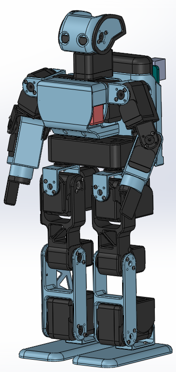
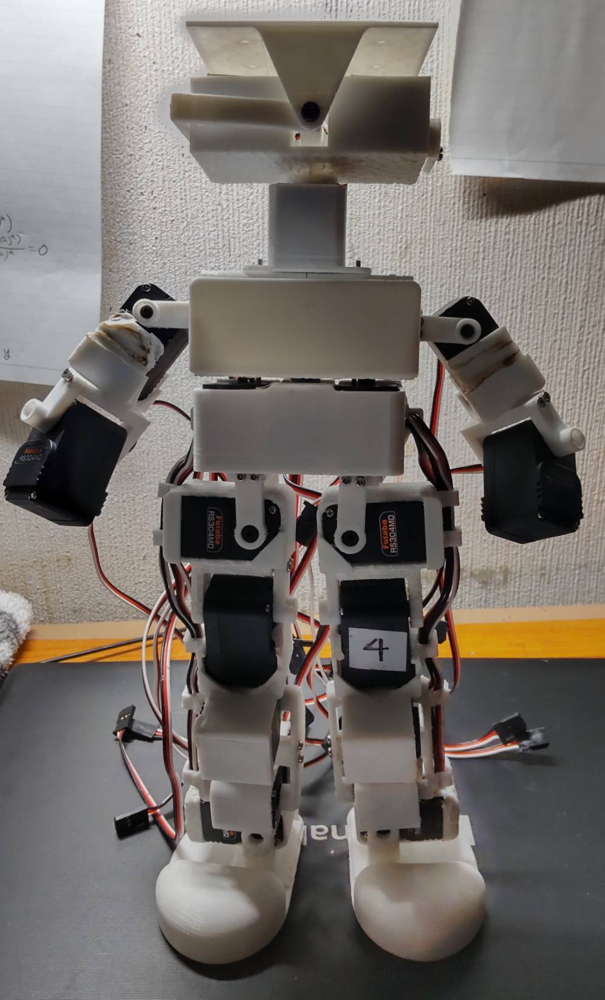
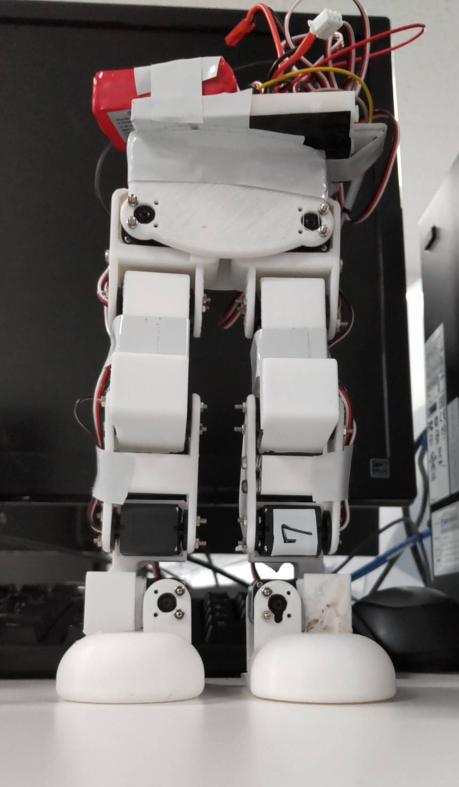
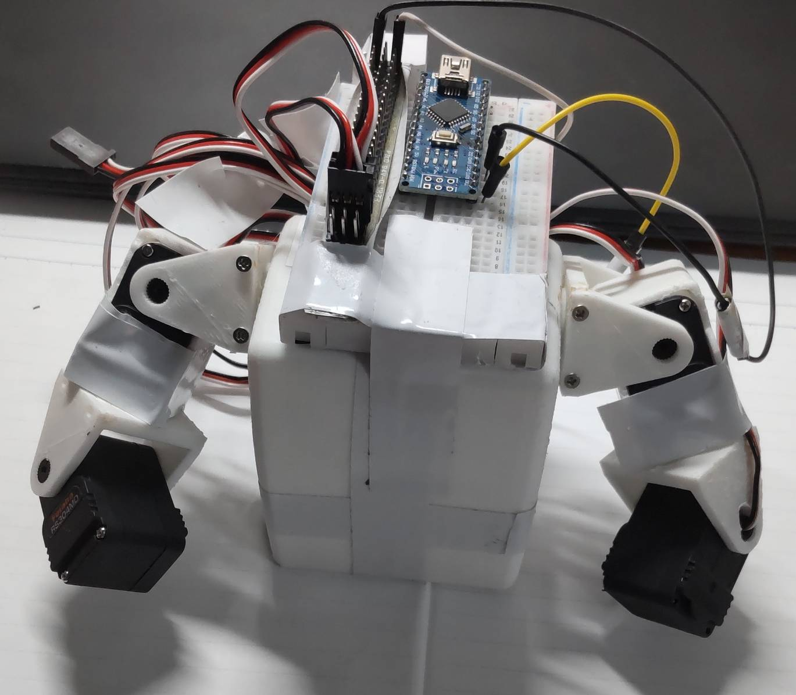

Concept
好奇心と創造力を引き出すロボット教材
ロボット教材が子供向けのプログラミング教材として人気が高い最大の理由はロボットが実際に動いたという感動が子供たちの好奇心を引き出し、学習意欲を高めるためである。
では、そのロボット教材の「感動を生み出し、好奇心を引き出す」というメリットを最大限引き出せるロボットは何か？
ヒューマノイドである。
「ヒューマノイドを歩かせるのは難しいだろうといったイメージ」
「人は人間に近い形状のモノに好感を示すという特性」
これらが学習過程で高い感動、好奇心を引き出すのである。
パーツを組み替える機能を持つロボットをモジュール型ロボットと呼ぶ。そして、このヒューマノイドも体のパーツを組み替えることで、学習者の目的に合わせ機能を拡張することができる。
これにより、ロボットは開発者にも思いつかないような柔軟な使い方ができる。そして、学習者と開発者のアイディアが融合することで、創造性の共鳴を起こすことを目指す。
Outline
3Dプリンターを保有するプログラミング教室で利用することを想定した中高生向けのロボット教材。
このヒューマノイドの最大の特長は腕、脚、胸などのパーツを「様々な機能を持ったパーツ」に取り換えることで ロボットの機能を拡張できる仕組みを有する点である。学習者はこの仕組みを活用して、ヒューマノイドを 発達させ自身の目的を達成することができる。
ヒューマノイドは複雑な制御を要するロボットである。ゆえに、世に出回っている研究向けヒューマノイド教材はその機能を大幅に 拡張することを考慮して開発されていない。
しかし、この教材では独自の姿勢制御技術を用いることで、「パーツ取り換えに伴い重心が変化するヒューマノイド」を初学者でも容易 にプログラムして操作することができる。
Learning Flow
この教材での学習の流れは学習初期においては
「目標を提示」
「それを達成するために必要な知識・スキルを示し、学習する」
「目標達成」
というサイクルを回すことを行う。（ロボットを組み立てる、ロボットを操作するため の周辺アプリの使い方の説明といった基本的な活動を通してこれを行う）
そして、ある程度学習者が知識、スキルを身に着け、開発の見通しを立てれるようになったら、学習者自身が
「目標を決める」
「それを達成するために思考し、必要な知識・スキルを身に着ける」
「目標を達成」
というサイクルを回せるようにサポートする。（パーツを取り換えて、学習者自身がヒューマノイドを発展させていく段階）
この目標を達成するサイクルを繰り返し回すことで
「思考力を磨く」
「知識・スキルを身に着ける際の心構えを知る」
「成長マインドセットを身に着ける」
といった不透明な時代を生き抜くために必須となる能力、考え方を総合的に学ぶ。
Key Development Points
ここからこの教材を実現するためのカギとなる姿勢制御について述べたい。
「モジュール型」と「ヒューマノイド」実はこの2つの親和性は低い。これらが合わさると「好奇心と創造力を引き出すロボット教材」 を開発することができるのだが、これらは相性が悪いのである。
具体的にどういうことか。今から、教材の学習の流れを想像してみたい。
ビジュアルプログラミング言語をご存じだろうか。下図のように「意味を持たせたブロック（以降これを関数と呼ぶ）」を組み合わせることでロボットに指示を出すプログラミング言語である。 これはコードを覚えなくても利用でき、プログラムの構造を初学者が知るために役に立つと、ほぼすべての子供向けプログラミング教室 で取り入れられている。
モジュール型ヒューマノイド教材でもまずはこのビジュアルプログラミング言語を使ってロボットを操作することになる。 すると開発者側で関数を用意することになる。
学習者は「ロボットを1歩前へ進める」「右に90度回転」といった関数を組み合わせることでロボットを操作していく。
ところで、ヒューマノイドは車輪型ロボットなどに比べて繊細な制御を要する。つまり、パーツを取り換えてロボットの重心が変化した時、 車輪型ロボットであれば重心変化の前後で同じプログラムでも動かせるが、ヒューマノイドは重心変化前のプログラムでは基本的に歩くことは 出来ず、倒れてしまう。
よって、ヒューマノイドはパーツを取り換えて重心が変化するたびにプログラムを書き換える必要が出てくる。つまり「パーツを取り換えるたび 新しい関数」が必要になるのである。
しかし、初学者がパーツ取り換え後のヒューマノイドのための関数を自作することは難しいし、開発者側が学習者それぞれの変化後のロボットに合わせた関数を用意 ことも不可能である。
以上の理由により「モジュール型」と「ヒューマノイド」は相性が悪いのである。
そこで、この問題を解決するのが「フィードバック制御」である。下記で説明する「フィードバック歩行制御理論」を取り入れることで「モジュール型」と「ヒューマノイド」 の仲を取り持ち「モジュール型ヒューマノイド教材」を机上の空論の夢物語から現実のモノへと落とし込むことができる。
Feedback Walking Control
「フィードバック歩行制御理論」と書いてあるとなんだか難しそうな気がする。 しかし、これはこの2つに分けることができる。
「歩行制御」
「フィードバック制御」
まったく理系でない人にも分かりやすいように説明するつもりなため、目を通していただけると幸いだ。 下の動画を見てもらうだけでも効果だけならわかるが。
まず歩行制御とは何か。制御とは「機械・装置などを望むとおりの運転状態にすること」だそうだ。 では、歩行制御とは「ロボットに望むとおりの歩行をさせること」なのだろう。 もう理論の半分理解できてしまった。
では次にフィードバック制御とは何かだ。この説明はやや長くなるが、これも概念を理解するだけなら難しいものではない。
制御の分類の仕方として次のように2つに分けられる。
「フィードフォワード制御」
「フィードバック制御」
つまり、「フィードバック制御」は制御の世界の2大派閥のうちの1つなのだ。 「お風呂を42度に保つこと」を例に2つの制御方法を説明する。ちなみに五右衛門風呂だ。
フィードフォワード制御とは「お風呂の温度を確認せずに経験則だけでお風呂の温度を42度で保ってみせる感じである」
対して、フィードバック制御とは「お風呂の温度を温度計で確認しながら火加減を調節して42度に保つような感じだ」
それぞれ次のようなメリット、デメリットがある。
フィードフォワード制御
メリット：「温度計がいらない」
デメリット：「熟練の風呂焚き職人じゃないと多分無理」「不測の事態に対応できない」
フィードバック制御
メリット：「風呂焚き見習いでもできる」「不測の事態にも対応できる」
デメリット：「温度計が必要」
このうち今回ポイントになるのが「不測の事態に対応できるか否か」である。
どれだけ熟練した風呂焚き職人がいたとしても、誰かがお風呂に氷を入れてしまったら、 お風呂の状態がわからないフィードフォワード制御では42度に保つことはできないだろう。
これを解決したいなら、温度計を使ってフィードバック制御を行えばよいのである。
これをロボットに当てはめると、 どれだけ完璧な関数（ロボットの動き）を作っていたとしても、 パーツを取り換えて重心が変化してしまったら、歩くことはできないのである。
そして、これを解決したいなら、ロボットにセンサーを取り付けて「ロボットの傾きの状態」 を監視させれば良いのである。
ここまでの説明をもとに「フィードバック歩行制御理論」を言語化すると 「センサーを使ってロボットの傾きの状態を監視ししながら歩かせることで パーツを取り換えて重心が変化したとしても、ちゃんと歩くことができるようにする理論」である。
この理論により「学習者によって様々な目的に向けて発達させられ、重心が変化したヒューマノイド」 を1種類の関数たちで操作することができるのである。
Movies
それでは「理論による補正無し」と「理論による補正あり」それぞれの歩行の様子を見ていきたい。
センサーで観測した傾きが減少するようにロボットに補正がかかる。動画は2種類あり、
1つ目は「パーツを取り換え前のロボットが補正無し、ありで歩く様子である」
2つ目は「パーツ取り換え後の重心が変化したロボットが補正無し、ありで歩く様子である」
どちらの動画でもまったく同じプログラムを使用している。
＜理論による補正無し＞ ＜理論による補正あり＞
これを見ると「補正無し」「補正あり」ともにパーツを取り換える前においては歩行することができることがわかる。
ただ「補正あり」の方はかなり揺れが起こっていることがわかる。この揺れを解決するために開発しているのが、のちに示す「プロトタイプ7」 である。
次に2つ目の動画を見たい。この動画に登場するロボットには左腕におもりが取り付けられている。
これにより「パーツを取り換えて 重心が変化したロボット」を疑似的に再現している。後述するプロトタイプ7からは実際にパーツを取り換えるための構造を持つ。
＜理論による補正無し＞ ＜理論による補正あり＞
この動画から「パーツを取り換えて重心が変化したロボット」が「補正無し」では倒れてしまい歩くことができないが、 「補正あり」では倒れず歩くことができていることがわかる。
もう一度繰り返すが「どちらの動画でもまったく同じプログラムを使用している」
つまり、理論による補正を加えることで「パーツを取り換える前のロボット」と「パーツを取り換えた後のロボット」が 共通のプログラムで歩行できることが示された。
これにより、この「プログラム」で「関数（ビジュアルプログラミングのブロック）」を作れば、その関数は 「学習者が様々な方向性に発達させ、重心が変化したロボット」すべてに共通して利用できるのである。
まだまだ改善は必要だが...
Prototype 7
プロトタイプ７でアップグレードされる点は次の３つである。
「パーツ取り換え機能を搭載する」
「歩行時の揺れを抑えるために脚部の剛性を高める」
「新設計法の導入」
それぞれ軽く述べたい。
まず「パーツの取り換え機能を搭載する」についてだ。 気づいている人も多いだろうか、ここまで、さんざん「モジュール型ヒューマノイド教材」について 語ってきたが、プロトタイプ6までは、モジュール型ではなく、ただのヒューマノイドである。
ここまでの設計は言ってしまえば準備段階で、プロトタイプ7からようやく新規性のある設計になる。 「パーツ取り換え機能を搭載する」ためにポイントとなる点は次2つだ。
「取り換えパーツに電気を供給する導線をロボット内部を通しながらうまく配線する」
「取り換え部分を大きくとりつつかつ、バランスの取れたデザインにする」
導線がロボットの周囲にたくさんあると見た目が悪いので（右のプロトタイプ3や4を見るとよくわかる）、 ロボットの内部を通すように工夫する。
そして、取り換え部分の体積が大きくとれる方が「取り換えパーツ」に搭載できる機能を増やせるので機能面では有利なのだが、 デザイン面ではごつくなってしまいやすい。それを解決するために後述の新しい設計法を導入する。
次に「歩行時の揺れを抑えるために脚部の剛性を高める」についてだ。
先ほどの動画で、理論による補正ありではかなり揺れが発生しているのが分かったと思う。これを改善するには 「揺れを抑えるように制御をする」と、「そもそも揺れにくい設計にする」という2つのアプローチがある。もちろん両方取り入れる。
後者のアプローチとしてプロトタイプ7の設計では脚部の剛性を高める（しなりにくくする）ことで揺れにくくすることを目指す。 ここでも、脚を太くすれば剛性は高くなるが、デザイン面ではごつくなるという問題が発生する。
そこでプロトタイプ7では、よりデザインにこだわるために、新たに「Blender」と呼ばれる「3DCG」ソフトを設計に取り入れる。 これにより、機能面とデザイン面を両立した設計を目指す。
デザイン面に関しては次の「Blender演習」でより詳しく述べている。
実際に設計中のプロトタイプ7の胴体を右に示す。緑色の部分がパーツ変更できる部分だ。
Prototype 6

Prototype 5
Prototype 4
Prototype 3
Prototype 2
 Prototype 1

Design idea